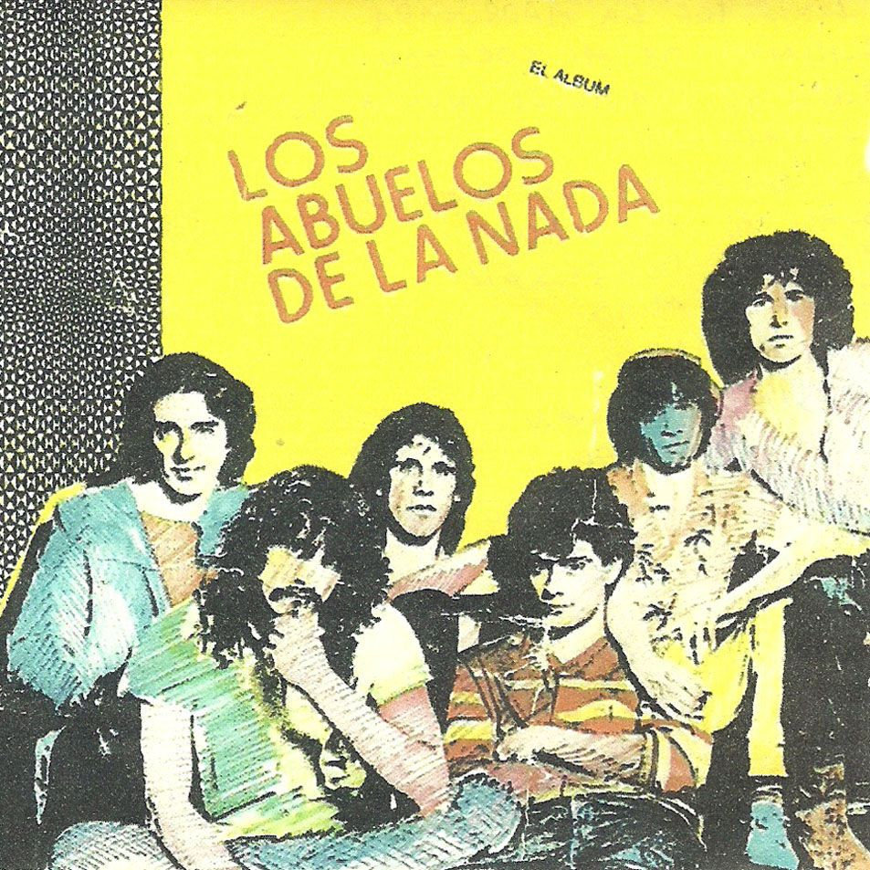
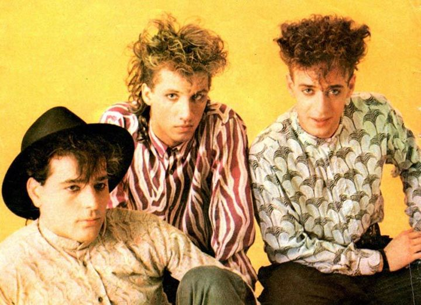
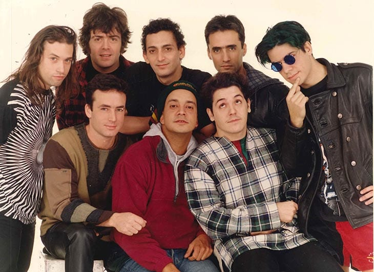

- Band name: Los Abuelos De la Nada
- Country: Argentina
- Genre: Rock, New wave, Pop Rock
- Band formation year: 1967
- released album number: 5
- Vocal lead: Miguel abuelo, Andres Calamaro
- Members: Miguel Abuelo, Andres Calamaro, Cachorro Lopez, Gustavo Bazterrica, Daniel Melingo, Willy Crook, Pomo Lorenzo

- Band name: Soda Stereo
- Country: Argentina
- Genre: Rock, New wave, Pop Rock
- Band formation year: 1983
- released album number: 7
- Vocal lead: Gustavo Cerati
- Members: Gustavo Cerati, Zeta Bosio, Charly Alberti

- Band name: Los Pericos
- Country: Argentina
- Genre: Reggae, Ska, Rocksteady
- Band formation year: 1986
- released album number: 12
- Vocal lead: Bahiano, Juan Baleirón
- Members: Bahiano, Guillermo Bonetto, Gaston Goncalvez, Ariel Rraiman, Marcelo Blanco, Diego Blanco, Horacion Avendaño, Mario Gutman

- Band name: Los Tres
- Country: Chile
- Genre: Rock chileno, Rock Latino, Jazz Rock
- Band formation year: 1987
- released album number: 7
- Vocal lead: Alvaro Henriquez, Angel Parra, Roberto Lindi, Francisco Moolina
- Members: Bahiano, Guillermo Bonetto, Gaston Goncalvez, Ariel Rraiman, Marcelo Blanco, Diego Blanco, Horacion Avendaño, Mario Gutman